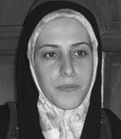

|
|

روایت تبعیض یکی دیگراز زنان سرزمینم / حضانت
چرا باید همیشه و برای هرکاری خودم را ثابت کنم ؟
مریم ماالک
يكشنبه6 اردیبهشت 1388
 تغییر برای برابری - باز یکی از زنان سرزمینم در یکی از دادگاههای این شهر بزرگ قربانی تبعیض و ناعدالتی شد. زنی که سالها از همسرش جدا شده بود. مردی که آثار کتک زدنش بر روح لطیف این زن قابل مشاهده بود و پسر کوچکی که هنگام کتک خوردن مادر، همراه او می گریست.
"سالهای اولی که از همسرم با هزار بدبختی و بخشیدن مهریه ام و هزار التماس جدا شدم، هم من و هم پسرم بیماری افسردگی داشتیم. با کمک خانواده ام تحت درمان قرار گرفتیم و خدا را شکر خوب شدیم اما هر زمان که گذشته را به یاد می آورم حالم بد می شود. همسرم بیمار روانی بود پارانوئید داشت و هر وقت که من را کتک می زد بعد خودش را می زد. به اجبار خانواده ازدواج کردم، 17 سال بیشتر نداشتم، آنها فکر می کردند این مرد خیلی خوب است و زندگی دخترشان را بهشت خواهد کرد.
"آن موقع آنقدر حال روحی من بد بود که به فکر حضانت پسرم نبودم ولی امروز باید آنقدر بدوم تا بتوانم حضانت او را بگیرم. پدرش دو بار دیگر نیز ازدواج ناموفق داشته ولی با این حال هم نمی توانم چیزی را ثابت کنم. مدرکی هم برای اثبات بیماری اش ندارم و نمی دانم این موضوع را در دادگاه بیان کنم یا نه؟ موقعیت های خوبی برای ازدواج داشتم اما مرا تهدید کرده بود که اگر بفهمد ازدواج کردم، پسرم را از من خواهد گرفت. می دانم بزرگ کردن یک بچه به تنهایی سخت است ولی بخاطر پسرم و بخاطر اخلاق بد پدرش نمی خواهم مثل او شود. او علاقه ای به فرزندم ندارد فقط از سر لجبازی می خواهد او را از من بگیرد و گرنه خودش هم نمی تواند از او نگهداری کند می خواهد پیش مادر پیرش بگذارد.
گفتند که برای حضانت باید استطاعت مالی داشته باشم و بیمه باشم، با هزار بدبختی کار مناسب پیدا کردم و بیمه هم شدم. اما باز نگران این هستم که بگویند حقوقت کافی نیست. چرا قانون در این موارد هیچ چیزی تعیین نکرده و قوانین چرا برای مشکل زنانی مثل من کمکی نمی کند. برای هر چیزی باید همیشه مدرک و سند داشته باشم اما او هر وقت و هر زمانی هر کاری دوست داشت می تواند انجام دهد. حتی وقتی کتک می خوردم قاضی که می دید پشیمان است می گفت اشکال ندارد، جبران می کند، تغییر می کند ولی تغییری نکرد که هیچ، بدتر هم شد."
زن همچنان دردهایش را بیرون می ریخت و پخش زمین می کرد و من متاثر و خاموش فقط گوش می دادم اما پسرک 7 ساله اش در میان حرف هایش دوید مرا به زمان حال آورد: "مامان غصه نخور با هم اون رو می زنیم و می کشیم، من دوست دارم پیش تو بمونم اونو دوست ندارم. "
و مادرش که تازه یادش افتاده بود که شنونده اش فقط من نبوده ام متوجه پسرش شد :"اینطور صحبت نکن گلم، من تمام تلاشم را می کنم که نگذارم تو پیش پدرت بروی، نگران نباش، کتک زدن کار خوبی نیست، خدا بچه هایی رو که دیگران رو بزنن دوست نداره عزیزم"
زن دست پسرش را گرفت به طرف بوفه رفت تا برای او مقداری خوراکی بخرد. ناامیدانه نگاهم کرد و لبخندی زد و خداحافظی کرد.
حضانت فرزند در قوانین ایران
حضانت هم از جنبه مادی مطرح است و هم از جهت معنوی؛ به این معنا كه نگهداری طفل شامل پرورش جسمی وی و فراهم آوردن امكانات لازم برای رشد اوست؛ از جمله تهیه خوراك ، پوشاك و مسكن و در صورت بیماری بهره مندی از پزشك و دارو و درمان، و به طور كلی هر آن چه برای دوام و بقای طفل لازم است، نگهداری محسوب می شود و در كنار پرورش و رشد و نمو جسمی، رشد معنوی طفل نیز ضروری است. شناخت محیط و آداب و رسوم و آشنایی با فرهنگ جامعه ای كه خانواده در آن زندگی می كند و آشنایی با افتخارات فرهنگی این جامعه و امكان تحصیل كه مهم ترین وسیله ی پرورش روحی و روانی طفل است به عنوان تربیت مطرح می شود.
قانونگذار برای نگاهداری طفل، در مواردی كه والدین با حكم دادگاه متاركه كرده اند و یا زمانی كه پدر و مادر به هر علتی جدا از یكدیگر زندگی می كنند تعیین تكلیف كرده است. این علت ممكن است اختلافات شدید زن و شوهر باشد به حدی كه ادامه زندگی مشترك را برای آنان غیر ممكن كند. مواردی در قانون پیش بینی شده كه زن می تواند زندگی خانوادگی را ترك و مسكن جداگانه اختیار كند، برای مثال سوء رفتار مرد به حدی باشد كه منجر به درگیری فیزیكی شده و زن مورد ضرب و شتم قرار گیرد؛ یا این كه شرافت و حیثیت زن در این زندگی مشترك در مخاطره باشد. البته اثبات این امر خود بسیار مشکل است. یا این كه خارج از این موارد دادخواست طلاق از جانب زن یا مرد به دادگاه تقدیم شده باشد و تا زمان صدور حكم كه ممكن است مدتی به طول انجامد زوجین جدا از یكدیگر به سر برند. در این موارد اگر پدر و مادر در نگهداری طفل توافق داشته باشند، قانون دخالتی در اراده و اختیار آنان ندارد و آن ها می توانند به نحوی كه صلاح طفل باشد از وی نگهداری كنند؛ مانند این كه توافق كنند نگهداری طفل به عهده مادر باشد و هزینه توسط پدر پرداخت شود. اما زمانی كه والدین برای نگاهداری طفل موافق نبوده و قادر به حل مسالمت آمیز موضوع نباشند و به دادگاه مراجعه كنند در این صورت قاعده كلی و اصل بر این است كه مادر اولویت دارد فرزند پسر و دختر را تا 7 سال داشته باشد. در این مدت تأمین هزینه به عهده پدر است. مگر این كه طرفین به طریق دیگری توافق داشته باشند؛ مانند این كه مقرر شود نگهداری و هزینه به عهده مادر باشد.
مواد قانونی مرتبط :
1- ماده 1115 قانون مدنی
2- ماده 1172 قانون مدنی
3- ماده 1175 قانون مدنی
4- ماده 1170 قانون مدنی
5- ماده 1174 قانون مدنی
6- ماده 12 آیین نامه اجرایی قانون حمایت خانواده
7- ماده 12 قانون حمایت خانواده مصوب 1353
8- ماده 14 همان قانون
http://www.tebyan.net/Social/House_Family/Law_Family/2004/1/15/5115.html